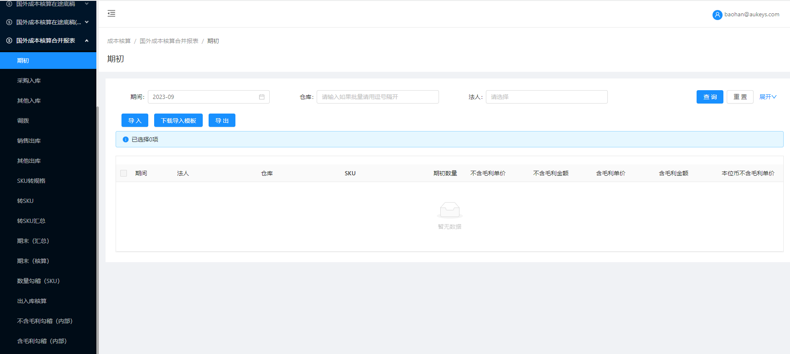

注意：以下均为新增页面
1.【期初】页面：
1.1搜索框：【法人】：下拉多选，无默认值，选项展示法人管理页面【法人类型】=‘境外法人’且【模块类型】=‘合并报表’且【当前期间】不为空的法人主体；
1.2按钮：1.2.1【导入】：1.2.1.1所导法人仅限【法人管理】页面中【法人类型】=‘境外法人’且【模块类型】=‘合并报表’的对应法人数据；
1.2.1.2所导期间仅限上述法人主体在【法人管理】页面对应的当前期间；（若存在）其余逻辑不变；
1.2.2【下载导入模板】：提示修改为：法人仅限境外法人，期间为合并报表的当前期间；
——其余页面按钮字段展示及逻辑与【国外成本核算合并报表/期初】页面保持一致；
2.【采购入库】页面：——页面按钮字段展示及逻辑与【境外成本核算佰易/采购入库】页面保持一致；
3.【其他入库】页面：
3.1搜索框：【法人】：下拉多选，无默认值，选项展示法人管理页面【法人类型】=‘境外法人’且【模块类型】=‘合并报表’且【当前期间】不为空的法人主体；
3.2按钮：3.2.1【导入】：3.2.1.1所导法人仅限【法人管理】页面中【法人类型】=‘境外法人’且【模块类型】=‘合并报表’的对应法人数据；
3.2.1.2所导期间仅限上述法人主体在【法人管理】页面对应的当前期间；（若存在）其余逻辑不变；
3.2.2【拉取佰易底稿数据】【拉取FBA底稿数据】：限制【法人类型】=‘境外法人’且【模块类型】=‘合并报表’对应法人当前期间数据；
——其余页面按钮字段展示及逻辑与【国外成本核算合并报表/采购入库】页面保持一致；
4.【调拨】页面：
4.1搜索框：【法人】：下拉多选，无默认值，选项展示法人管理页面【法人类型】=‘境外法人’且【模块类型】=‘合并报表’且【当前期间】不为空的法人主体；
4.2按钮：4.2.1【导入】：4.2.1.1所导法人仅限【法人管理】页面中【法人类型】=‘境外法人’且【模块类型】=‘合并报表’的对应法人数据；
4.2.1.2所导期间仅限上述法人主体在【法人管理】页面对应的当前期间；（若存在）其余逻辑不变；
4.2.2【下载导入模板】：提示修改为：期间：格式为年份+月份，如2019-08（文本格式），仅限境外法人合并报表模块的当前期间 法人：仅限境外法人；
——其余页面按钮字段展示及逻辑与【国外成本核算合并报表/调拨】页面保持一致；
5.【销售出库】页面：
5.1搜索框：【法人】：下拉多选，无默认值，选项展示法人管理页面【法人类型】=‘境外法人’且【模块类型】=‘合并报表’且【当前期间】不为空的法人主体；
5.2按钮：5.2.1【导入】：5.2.1.1所导法人仅限【法人管理】页面中【法人类型】=‘境外法人’且【模块类型】=‘合并报表’的对应法人数据；
5.2.1.2所导期间仅限上述法人主体在【法人管理】页面对应的当前期间；（若存在）其余逻辑不变；
5.2.2【拉取佰易底稿数据】【拉取FBA底稿数据】：限制【法人类型】=“境外法人”且【模块类型】=“合并报表”对应法人当前期间数据；
5.2.3【批量删除】：按照对应境外法人合并报表模块的当前期间删除数据；
——其余页面按钮字段展示及逻辑与【国外成本核算合并报表/销售出库】页面保持一致；
6.【其他出库】页面：
6.1搜索框：【法人】：下拉多选，无默认值，选项展示法人管理页面【法人类型】=‘境外法人’且【模块类型】=‘合并报表’且【当前期间】不为空的法人主体；
6.2按钮：6.2.1【导入】：6.2.1.1所导法人仅限【法人管理】页面中【法人类型】=‘境外法人’且【模块类型】=‘合并报表’的对应法人数据；
6.2.1.2所导期间仅限上述法人主体在【法人管理】页面对应的当前期间；（若存在）其余逻辑不变；
6.2.2【拉取佰易底稿数据】【拉取FBA底稿数据】：限制【法人类型】=“境外法人”且【模块类型】=“合并报表”对应法人当前期间数据；
6.2.3【批量删除】：按照对应境外法人合并报表模块的当前期间删除数据；
——其余页面按钮字段展示及逻辑与【国外成本核算合并报表/其他出库】页面保持一致；
7.【SKU转规格】页面：
搜索框：【法人】：下拉多选，无默认值，选项展示法人管理页面【法人类型】=‘境外法人’且【模块类型】=‘合并报表’且【当前期间】不为空的法人主体；
——其余页面按钮字段展示及逻辑与【国外成本核算合并报表/SKU转规格】页面保持一致；
8.【转SKU】页面：
8.1搜索框：【法人】：下拉多选，无默认值，选项展示法人管理页面【法人类型】=‘境外法人’且【模块类型】=‘合并报表’且【当前期间】不为空的法人主体；
8.2按钮：8.2.1【导入】：8.2.1.1所导法人仅限【法人管理】页面中【法人类型】=‘境外法人’且【模块类型】=‘合并报表’的对应法人数据；
8.2.1.2所导期间仅限上述法人主体在【法人管理】页面对应的当前期间；（若存在）其余逻辑不变；
8.2.2【下载导入模板】：提示修改为：期间：格式为年份+月份，如2019-08（文本格式），仅限境外法人合并报表模块的当前期间 法人：仅限境外法人；
8.2.3【拉取佰易底稿数据】【拉取FBA底稿数据】【查看生成转SKU汇总数据进度】：限制【法人类型】=“境外法人”且【模块类型】=“合并报表”对应法人当前期间数据；
8.2.4【生成转SKU汇总数据】：数据范围为【法人类型】=“境外法人”且【模块类型】=“合并报表”对应法人当前期间数据。每次生成前，先删除转SKU汇总表中，【法人类型】=“境外法
人”且【模块类型】=“合并报表”的对应法人当前期间且数据来源=程序生成的数据；（转SKU汇总的限制条件：【期间+法人】维度相同）
8.2.5【批量删除】：按照对应境外法人合并报表模块的当前期间删除数据；
——其余页面按钮字段展示及逻辑与【国外成本核算合并报表/转SKU】页面保持一致；
9.【转SKU汇总】页面：
9.1搜索框：【法人】：下拉多选，无默认值，选项展示法人管理页面【法人类型】=‘境外法人’且【模块类型】=‘合并报表’且【当前期间】不为空的法人主体；
9.2按钮：9.2.1【导入】：9.2.1.1所导法人仅限【法人管理】页面中【法人类型】=‘境外法人’且【模块类型】=‘合并报表’的对应法人数据；
9.2.1.2所导期间仅限上述法人主体在【法人管理】页面对应的当前期间；（若存在）其余逻辑不变；
9.2.2【下载导入模板】：提示修改为：期间：格式为年份+月份，如2019-08（文本格式），仅限境外法人合并报表模块的当前期间 法人：仅限境外法人；
8.2.3【清空本期转SKU汇总数据】：清空【法人类型】=“境外法人”且【模块类型】=“合并报表”对应法人当前期间数据；
8.2.4【批量删除】：按照对应境外法人合并报表模块的当前期间删除数据；
——其余页面按钮字段展示及逻辑与【国外成本核算合并报表/转SKU汇总】页面保持一致；
10.【期末（汇总）】页面：
10.1搜索框：【法人】：下拉多选，无默认值，选项展示法人管理页面【法人类型】=‘境外法人’且【模块类型】=‘合并报表’且【当前期间】不为空的法人主体；
10.2按钮：10.2.1【导入】：10.2.1.1所导法人仅限【法人管理】页面中【法人类型】=‘境外法人’且【模块类型】=‘合并报表’的对应法人数据；
10.2.1.2所导期间仅限上述法人主体在【法人管理】页面对应的当前期间；（若存在）其余逻辑不变；
10.2.2【拉取佰易底稿数据】【拉取FBA底稿数据】【拉取在途底稿数据】：限制【法人类型】=“境外法人”且【模块类型】=“合并报表”对应法人当前期间数据；
10.2.3【批量删除】：按照对应境外法人合并报表模块的当前期间删除数据；
——其余页面按钮字段展示及逻辑与【国外成本核算合并报表/期末（汇总）】页面保持一致；
11.【期末（核算）、数量勾稽（SKU）】页面：
11.1搜索框：【法人】：下拉多选，无默认值，选项展示法人管理页面【法人类型】=‘境外法人’且【模块类型】=‘合并报表’且【当前期间】不为空的法人主体；
11.2按钮：【拉取出入库数据并计算期末】：仅汇总运算【法人类型】=“境外法人”且【模块类型】=“合并报表”对应法人当前期间数据；其余逻辑不变；
——其余页面按钮字段展示及逻辑与【国外成本核算合并报表/期末（核算）、数量勾稽（SKU）】页面保持一致；
12.【出入库核算、不含毛利勾稽（内部）、含毛利勾稽（内部）、不含毛利勾稽（外发）、含毛利勾稽（外发）】页面：
搜索框：【法人】：下拉多选，无默认值，选项展示法人管理页面【法人类型】=‘境外法人’且【模块类型】=‘合并报表’且【当前期间】不为空的法人主体；
——其余页面按钮字段展示及逻辑与【国外成本核算合并报表/出入库核算、不含毛利勾稽（内部）、含毛利勾稽（内部）、不含毛利勾稽（外发）、含毛利勾稽（外发）】页面保持一致；
12.【结账】页面：
12.1数据源：列表同步【法人管理】页面【法人类型】=‘境外法人’且【模块类型】=‘合并报表’的数据；
12.2按钮：【结账检查】【结账】按钮逻辑也随之调整；
——其余页面按钮字段展示及逻辑与【国外成本核算合并报表底稿/结账】页面保持一致；